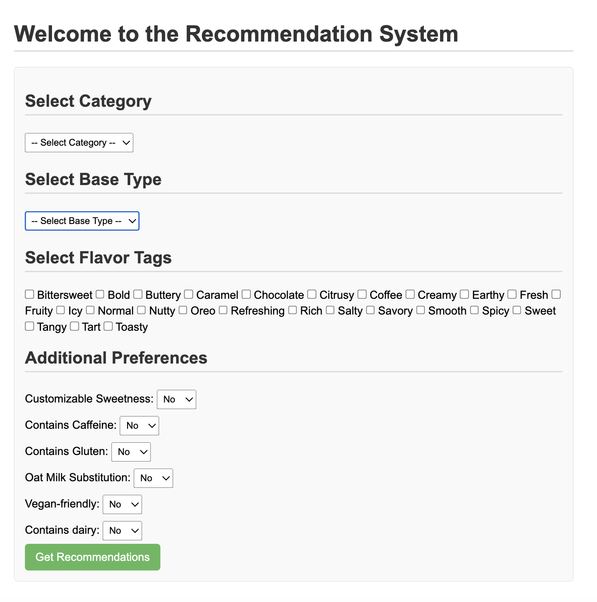

01.
Maddata Health Simulation

Developed a health simulator using Streamlit that predicts changes in BMI and health status based on user lifestyle modifications. Integrated machine learning models and real-time interactive visualization.
VIEW DETAILS
02.
Kung Fu Tea Recommendation System
Built a recommendation system using Django and SQL to suggest similar drinks based on ingredient analysis. The system helps customers explore new drinks based on their preferences.

03.
Obesity Prediction & Risk Insight
Implemented an MLP Regressor model to predict obesity risk based on user lifestyle data. Built a data pipeline with feature engineering and visualization to provide actionable insights.
04.
Jewelry Market Analysis
Conducted customer retention analysis using SQL and Tableau to identify purchasing patterns. Developed insights to optimize product strategies and improve customer engagement.
VIEW DETAILS